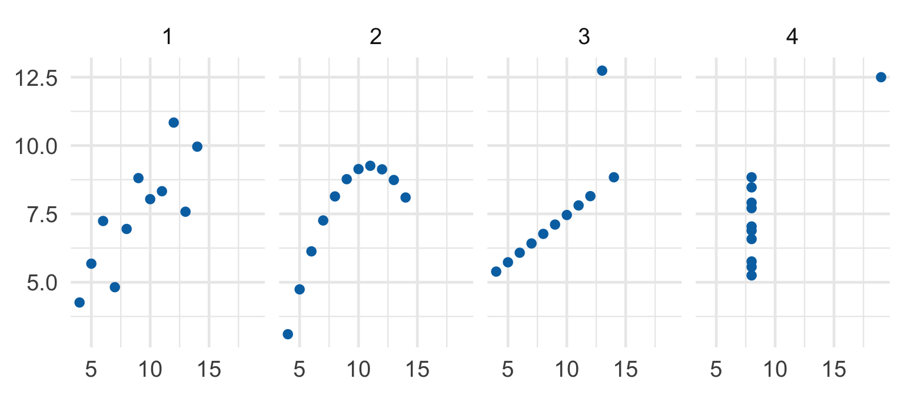
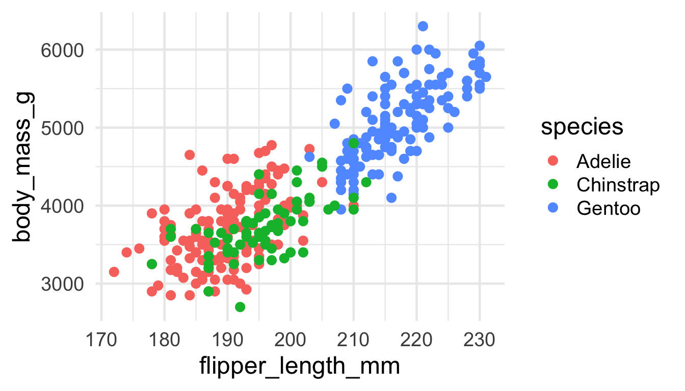
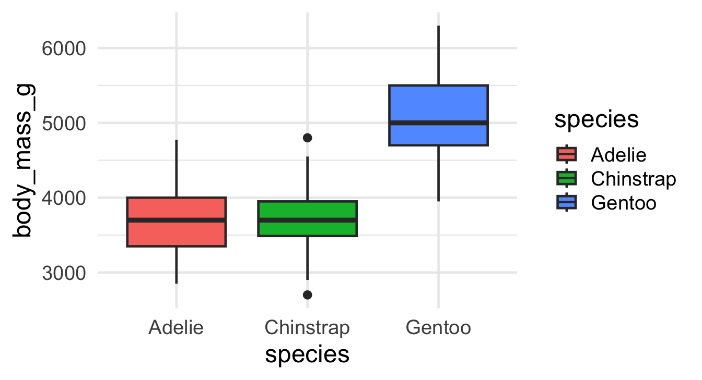
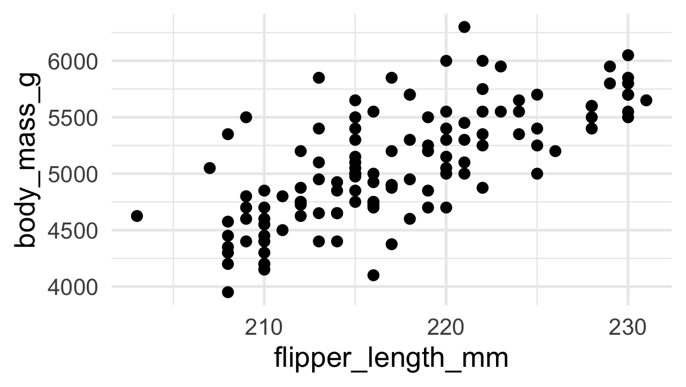
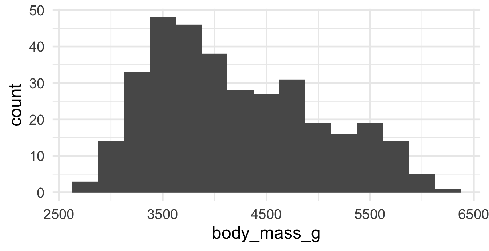
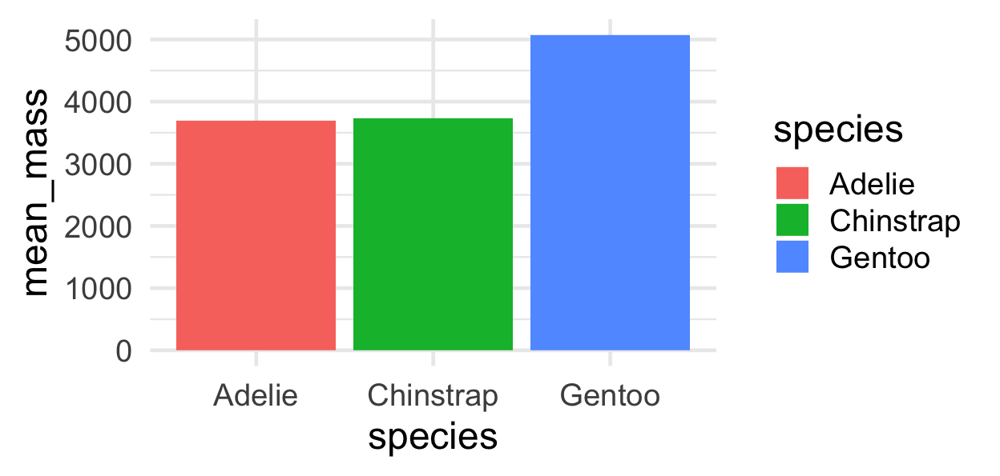
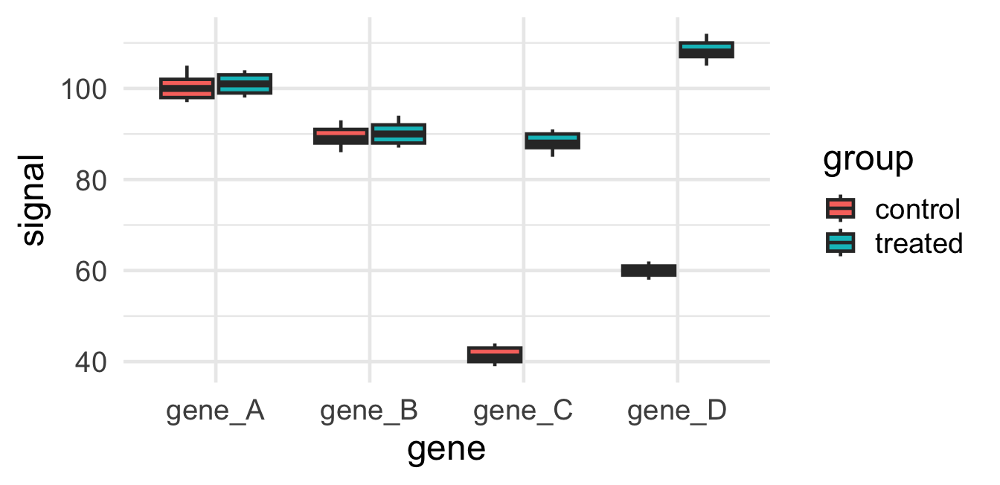

RISE 2026
Go to wooclap.com and enter event code RAGON — or scan:
Four datasets. Same summary statistics. Very different stories.

A picture shows what a table of numbers hides.
Every row in your table becomes one mark on the plot.
aes())
Mark = dot · Mapping = flipper→x, mass→y, species→colour · one row = one dot.
ggplot()
A box summarises many rows. The mappings still mean the same thing.
The most common beginner mix-up. Colour from a column vs. one fixed colour.
|>|> means “take this data, then…”

Go to wooclap.com and enter event code RAGON — or scan:
Open notebooks/01-visualization.qmd, Exercise 1. For each plot, ask:
Then build a scatter one line at a time, and swap in a boxplot.
So far every plot compared two things (x vs y).
Sometimes you have just one column of numbers — say, the body mass of every penguin — and you want to see its shape:
geom_histogram — count rows into bins
Cut the range into bins, then count how many rows fall in each. The bar’s height is a count of rows. (Still: every row lands in exactly one mark.)

A histogram shows one distribution in detail. A boxplot squeezes each distribution into one box — handy for comparing groups side by side.
geom_histogram — the full shape of one distributiongeom_boxplot — a compact summary, great for comparing groupsIn notebooks/01-visualization.qmd, Exercise 2:
flipper_length_mm.binwidth and watch the shape change.body_mass_g by species.Go to wooclap.com and enter event code RAGON — or scan:
A plate reader gives you one row per sample, with a separate column for each gene it measured:
| sample | group | gene_A | gene_B | gene_C | gene_D |
|---|---|---|---|---|---|
| s01 | control | 102 | 88 | 41 | 59 |
| s02 | control | 98 | 91 | 44 | 62 |
| s03 | control | 105 | 86 | 39 | 58 |
| s04 | control | 100 | 93 | 43 | 61 |
Four measurements are crammed into one row. This is wide format — easy for the machine, hard for ggplot.
The rule: one row = one observation, one column = one variable.
One measurement of one gene in one sample is an observation — so it should be its own row, with a gene column and a signal column.
pivot_longer — from wide to long| sample | group | gene | signal |
|---|---|---|---|
| s01 | control | gene_A | 102 |
| s01 | control | gene_B | 88 |
| s01 | control | gene_C | 41 |
| s01 | control | gene_D | 59 |
The gene column names become values in a gene column; the numbers stack into a signal column. Now each row is one measurement.

Wide data couldn’t make this plot. One pivot_longer unlocked it — and the treatment story (genes C & D switch on) jumps right out.
In notebooks/01-visualization.qmd, Exercise 3:
read_csv() the wide plate file and look at it.pivot_longer() the gene columns into gene and signal.signal by gene, filled by group.aes() maps columns to properties.geom_histogram and geom_boxplot show the shape of numbers.pivot_longer makes it plottable.